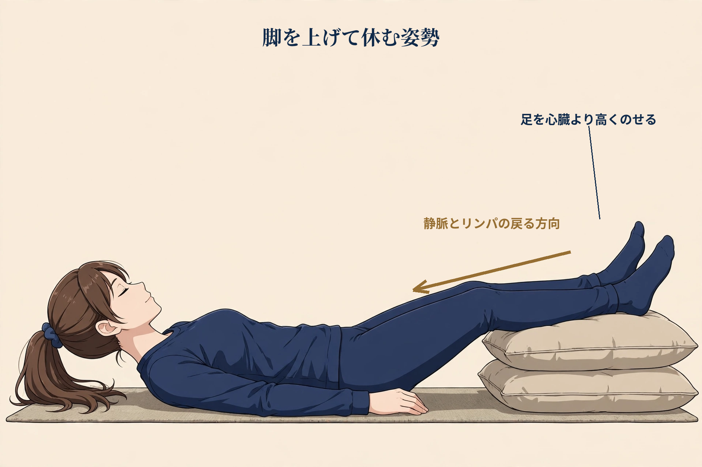

トップ › 美容整体の専門解説 › むくみと血行・リンパの巡り
CIRCULATION
むくみと血行・リンパの巡り
夕方になると脚が重い、靴がきつく感じる。そんな日常の感覚の背景にある、血液とリンパの巡りの仕組みと、移動やデスクワークとの関係を分かりやすく解説します。
むくみとは何か｜水分の巡りと滞りの仕組み
むくみとは、皮膚の下の組織に余分な水分がたまった状態を指す言葉です。体の水分は、血液やリンパの流れに乗って全身を巡り、細胞との間で常に行き来しています。通常は、送り出される量と回収される量のバランスが保たれていますが、同じ姿勢が長く続いたり、筋肉の動きが少なかったりすると、回収が追いつかずに水分がたまりやすくなります。特に脚は心臓から遠く、重力の影響も受けるため、夕方にかけてむくみを感じやすい部位です。朝はすっきりしていた脚が、仕事終わりには重く感じる、靴下の跡が残る、といった経験は多くの方にあります。これは体質だけの問題ではなく、その日の過ごし方が反映された結果でもあります。仕組みを知ると、むくみやすい場面と対処のタイミングが見えてきます。むくみの感じ方には個人差があり、同じ人でも季節や気温、塩分の多い食事が続いた日、睡眠不足の日などで変わります。夏は冷房の効いた室内と暑い屋外を行き来し、血管の調整が忙しくなる季節です。冬は寒さで体が縮こまり、活動量が減りがちです。季節ごとにむくみやすい条件が違うため、自分の体がどの場面で重くなりやすいかを振り返ると、対策を立てやすくなります。体の反応を責めるのではなく、条件と結果の関係として観察することが、巡りのケアを続けるうえでの大切な姿勢です。
血液の巡り｜心臓のポンプと筋肉のポンプ
血液は心臓の拍動によって全身へ送り出されます。動脈を通って脚の先まで届いた血液が戻ってくるときは、静脈を通りますが、心臓から遠い脚では、戻る力を助ける仕組みが重要になります。その代表が、ふくらはぎの筋肉によるポンプ作用です。歩くたびにふくらはぎの筋肉が収縮と弛緩を繰り返し、静脈を押し上げるように働きます。ふくらはぎが「第二の心臓」と呼ばれるのはこのためです。逆に、座ったまま・立ったままの姿勢が続くと、このポンプが働く機会が減り、脚の血液は戻りにくくなります。新幹線で数時間座り続けた日や、御堂筋線の混雑で身動きが取りにくい通勤が続いた日に脚が重くなるのは、ポンプの出番が少なかったことと関係しています。図1のとおり、巡りは心臓だけでなく、全身の筋肉の動きに支えられています。ふくらはぎのポンプは、歩く速さや歩幅によっても働き方が変わります。ゆっくり小股で歩くより、少し歩幅を広げてかかとから着地し、つま先で地面を押す歩き方のほうが、ふくらはぎの収縮が大きくなります。通勤の歩行をそのままケアの時間にするには、歩き方の意識が鍵です。また、長時間立ったままの仕事では、その場でかかとの上げ下げを繰り返すだけでもポンプを働かせることができます。動けない環境にも、工夫の余地はあります。ポンプは特別な運動ではなく、日常の脚の動きそのものによって働く仕組みです。

リンパの巡り｜ゆっくり流れるもう一つの回収路
リンパは、血液とは別の回収路です。組織に残った水分や老廃物の一部は、リンパ管に集められてゆっくりと流れ、最終的には静脈へ合流します。血液と違うのは、リンパには心臓のような専用のポンプがない点です。リンパの流れは、周囲の筋肉の動き、呼吸による胸やお腹の圧の変化、体の動きそのものによって促されます。そのため、動きの少ない日はリンパの巡りも緩やかになり、水分が組織に残りやすくなります。深い呼吸が巡りの助けになるといわれるのは、横隔膜の動きが圧の変化を生むためです。オイルマッサージで皮膚の表面を一定の方向へなでる手技が心地よく感じられる背景にも、このゆっくりした流れを促す考え方があります。速さを求めるのではなく、滞りのある場所へ動きのきっかけを作ることが、巡りのケアの基本です。リンパの流れは、体の表面に近いところを流れる部分も多く、皮膚へのやさしい刺激でも影響を受けます。入浴中に脚を下から上へなでるように洗う、衣服の締め付けを避ける、といった日常の行動も、流れを妨げないという意味でケアの一部です。また、睡眠中は重力の影響が減り、水分が体全体へ再配分されやすい時間帯です。朝に脚がすっきりしていることが多いのは、この再配分の働きによるものです。夜の過ごし方と朝の脚の状態はつながっており、睡眠の質も巡りを考えるうえで欠かせない要素です。
新大阪の暮らしとむくみ｜移動・座り仕事・立ち仕事
新大阪周辺の暮らしには、むくみと関わる場面がいくつもあります。まず長距離移動です。出張や旅行で新幹線に長時間座ると、脚を動かす機会が減り、到着後に脚の重さを感じることがあります。次にデスクワークです。西中島南方や新大阪のオフィスで座り続ける日は、ふくらはぎのポンプが働きにくく、夕方に靴がきつく感じる方も少なくありません。反対に、接客や販売などで立ち続ける仕事でも、筋肉の動きが少ない立ち姿勢では巡りは滞りやすくなります。さらに、移動先での外食や、旅先での歩き疲れが重なると、脚の張りとむくみが同時に現れることもあります。場面ごとに原因の組み合わせは異なりますが、共通するのは「同じ姿勢の長さ」です。時間を区切って姿勢を変えることが、どの場面にも共通する対策になります。旅行の場面では、歩く量が普段より大幅に増えることがあり、むくみと筋肉の疲れが重なって現れます。旅先では休憩をこまめに取り、宿に戻ったら脚を上げて休む時間を作ることが、翌日の動きやすさを支えます。出張では、会議室での座り姿勢と移動の座り姿勢が重なり、歩く機会が極端に減る日もあります。ホテルでシャワーだけでなく湯船につかる習慣は、温めと水圧の両面で巡りを助けます。場面ごとに、座りすぎなのか歩き疲れなのかを見分けることが、適切な対処を選ぶポイントです。
施術で巡りに働きかける考え方｜オイルマッサージの役割
ステラカストル新大阪では、巡りのケアとしてオイルマッサージを取り入れています。オイルを使うことで皮膚への摩擦を抑えながら、脚や背中を一定のリズムでなでる手技を行い、表面の巡りを促すことを目的とします。あわせて美容整体の視点から、骨盤や姿勢の土台を見ることで、巡りを妨げる姿勢の偏りにも目を向けます。施術の時間は90分10,000円で、その日の移動量や仕事の内容を伺い、脚の重さが強い日は下半身を丁寧に扱うなど、状態に合わせて配分を調整します。施術は医療行為ではなく、むくみに関わる病気の診断や治療を行うものではありません。脚の腫れが片側だけに強く出る、痛みを伴うといった場合は、まず医療機関への相談をおすすめしています。日常のケアとしての役割を踏まえて施術を行っています。施術の際は、脚だけでなく、脚の付け根や骨盤まわりの状態も確認します。巡りの通り道は全身につながっており、出口に近い部分の張りが強いと、流れ全体に影響することがあるためです。施術後は水分を取ることや、その日のうちに軽く歩くことが、巡りのリズムを保つ助けになります。また、施術の効果の感じ方には個人差があるため、回数を重ねる場合は脚の重さの変化を日ごとに観察していただくことをおすすめしています。体の反応を一緒に確認しながら、ケアの進め方を調整していくことが大切です。
日常で巡りを助ける工夫｜歩く・温める・ゆるめる
巡りを助ける工夫は、日常の小さな動きの積み重ねです。通勤では一駅分歩く、駅では階段を使うなど、ふくらはぎを使う機会を意識して増やすことが基本になります。デスクでは、座ったまま足首を回したり、つま先とかかとを交互に上げ下げしたりするだけでもポンプの働きを助けます。帰宅後は入浴で体を温め、脚を心臓より少し高くして休む時間を作ると、重さが和らぐ感覚を持つ方もいます。靴下や衣類の締め付けが強い場合は、サイズを見直すことも一つの工夫です。出張先では、ホテルの部屋で足首を動かす、到着後に短時間歩くといった小さな行動が翌日の脚の軽さにつながります。特別な道具は要りません。動く、温める、休ませる。この3つを暮らしのリズムに組み込むことが、巡りのケアの土台です。工夫を習慣にするためには、タイミングを決めておく方法が役立ちます。朝の着替えの前に足首を回す、昼休みに一度外を歩く、帰宅後に入浴しながら脚をなでる、就寝前に脚を上げて深呼吸をする。行動を時間や場面と結びつけておくと、意識しなくても続けやすくなります。むくみのケアは、一度に大きく変えるものではなく、小さな行動の積み重ねで巡りの土台を作るものです。自分の暮らしに合うタイミングを見つけることが、無理なく続けるための一番の近道です。
関連する症状・お悩み
よくあるご質問
むくみは病気のサインですか？
日常のむくみの多くは姿勢や活動量と関係しますが、片脚だけの腫れや痛みを伴う場合などは医療機関への相談をおすすめします。当サロンでは診断は行いません。
水分を控えればむくみにくくなりますか？
水分の取り方だけで単純に決まるものではありません。極端な制限はせず、日常の活動量や姿勢と合わせて考えることが大切です。
移動の日に気をつけることは？
長時間座る日は、途中で足首を動かしたり、到着後に短時間歩いたりすることが巡りの助けになります。締め付けの強い衣類も見直しポイントです。
オイルマッサージはむくみにどう関わりますか？
皮膚の表面を一定の方向へなでる手技で、巡りを促すことを目的とした日常のケアです。病気の治療を目的としたものではありません。
専門解説シリーズ
施術者について
平賀 伸人（ひらが のぶひと／男性セラピスト）｜施術歴30年。鍼灸師（国家資格）・登録販売者・アロマセラピスト・パーソナルトレーナーの資格を持ち、オイルマッサージと美容整体を、その日の状態とご希望に合わせて組み合わせて施術します。このページの内容は、施術者の知識と経験をもとに作成しています。
料金・店舗情報
オイルマッサージ＋美容整体 90分 10,000円（税込）｜コースは1つだけです。有料の追加オプションの販売はありません。お支払いは現金のみです。
住所：大阪市淀川区西中島7-2-13（新大阪駅・大阪メトロ御堂筋線 南口から徒歩3分）｜営業時間：月〜土 17:00〜22:00・日曜休み｜女性専用・完全予約制｜当サロンでは鍼灸施術は行いません。
ご予約・お問い合わせ
ご予約はLINE公式アカウントで受け付けています。ご希望の日時をお送りください。変更・キャンセルはLINEでご連絡ください。キャンセル料はいただきません。